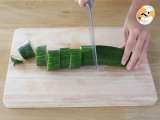
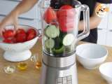
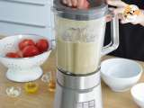
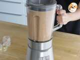
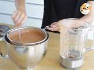

1 Receta gazpacho andaluz
- Aceite de oliva virgen extra
- Vinagre de jerez
- Tomates rojos bien maduros
- Ajo
- Molletes andaluces
- pimiento verde
- pepino
- sal
2 Pasos a seguir
- todo en el vaso de la batidora o un bol grande y echamos el aceite de oliva virgen extra, vinagre de Jerez y la sal. Trituramos con la batidora hasta que nos quede una salsa líquida.
- esta salsa por un colador o un chino, así retiramos posibles trozos de piel y pequeñas pepitas que hayan quedado para que nos quede lo más fino posible. Probamos si está bien de sal y si no rectificamos 6con un poco más.
- nos queda meterlo en la nevera y dejar que se enfríe, en un par de horas lo tendréis bien fresquito y perfecto para probar el mejor gazpacho.
- emplatarlo lo mejor es ponerlo en un plato hondo o cuenco y acompañar con unas lascas de jamón de bellota (un poquito sólo no os va a arruinar) o unos taquitos de queso fresco tipo mozzarella. Para mí, el mejor gazpacho se toma simplemente en vaso y ya está, directamente para el cuerpo. Buen provecho.
- Añadimos el ajo, el aceite de oliva, la sal, el vinagre, y la mitad del agua.
Batimos de nuevo.
- Pasamos el gazpacho por un colador para quitarle las pepitas y los restos de piel de tomate que hayan quedado.
- Por último, añadimos el resto del agua, rectificamos de sal o vinagre, mezclamos bien y tapamos con film para refrigerar durante 1 hora.
Después, sólo tienes que servirlo en un bol o un vaso (para tomar con cuchara o bebido).
Opcional, añadirle pepino y tomate picado por encima y un chorreón de aceite.




